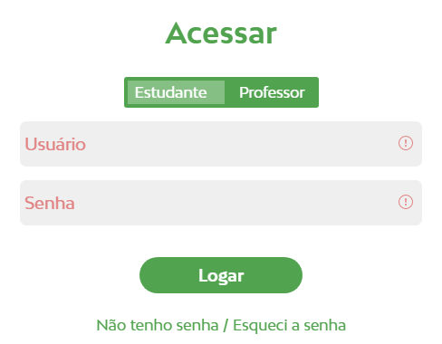
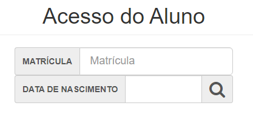
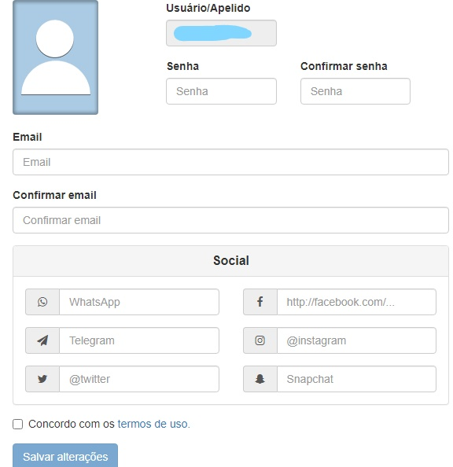
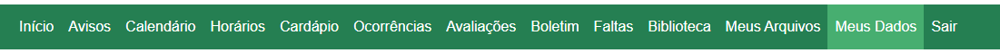

primeira coisa: Entre no Net escola
Segunda coisa: click em "Não tenho senha / Esqueci a senha"
logo apos clicar você ira para esta tela
Nesta tela você ira colocar sua matricula e sua data de nascimento
logo depois que você preencher "matricula" e "data de nascimento" click no botão da lupa
logo depois que você clicar na lupa você ira para esta tela
nesta tela você ira criar uma senha de no minimo 8 caracteres esta senha sera utilizada para entra no site do net escola. Depois de criar a senha você ira preencher o campo de "email" logo depois voce deve você de aceitar os "termo de uso".
depois de colocar estes dados citados acima você deve clicar no botão "salvar alterações" e o seu cadastro estara pronto.
algumas pessoas não sabem como e nem onde pegar a sua matricula mas é bem simples siga as instruções abaixo!
para encontrar sua matricula você devera acessar: ALUNOS - GR8 ESCOLAR
logo depois de acessar você ira no menu lateral e click em "Meus Dados"
para pegar a sua matricula basta descer para baixo e você ira achar sua matricula estara abaixo de "CPF"